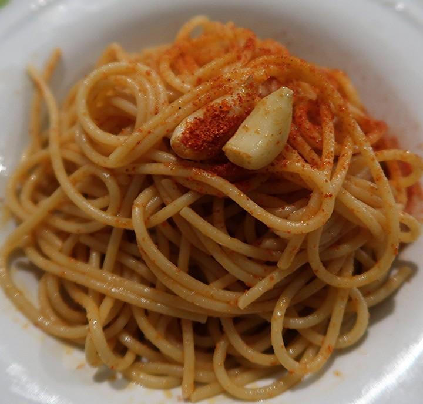

Spaghetti con pepe rosso scattiato
Ingredienti(dose per 3 persone)
Di seguito riportiamo gli ingredienti per preparare i nostri spaghetti con pepe rosso scattiato:
- 300g Spaghetti n°5
- Pepe rosso macinato q.b.
- Olio extravergine d'oliva
- Aglio a piacere
Preparazione
- Far bollire l'acqua e mettere la pasta a cuocere.
- Mettere l'olio e l'aglio in padella.
- Quando vediamo che intonro l'aglio si creano delle bollicine(cioè sta friggendo) mettiamo il pepe rosso macinato in padella.
- Fatto questo passaggio, prendiamo i nostri spaghetti che abbiamo scolato e con attenzione li mettiamo nella padella con l'olio,aglio e pepe rosso.
- Fate attenzione quando mettete la pasta in padella perchè possono schizzare delle gocce di olio.
- Infine prendiamo un bel piatto e impiattiamo i nostri spaghetti con pepe scattiato.